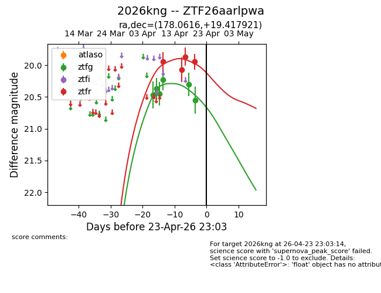
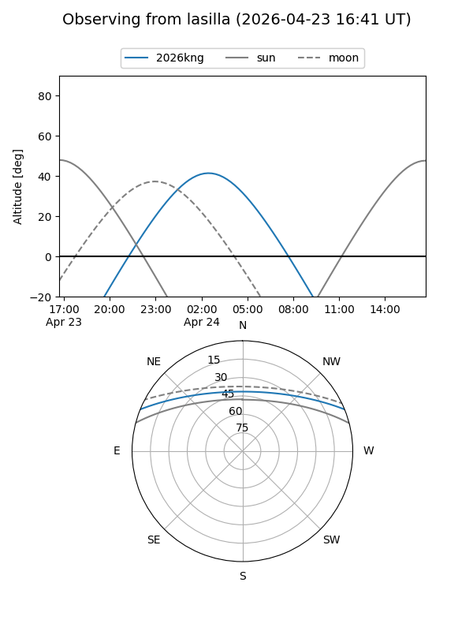
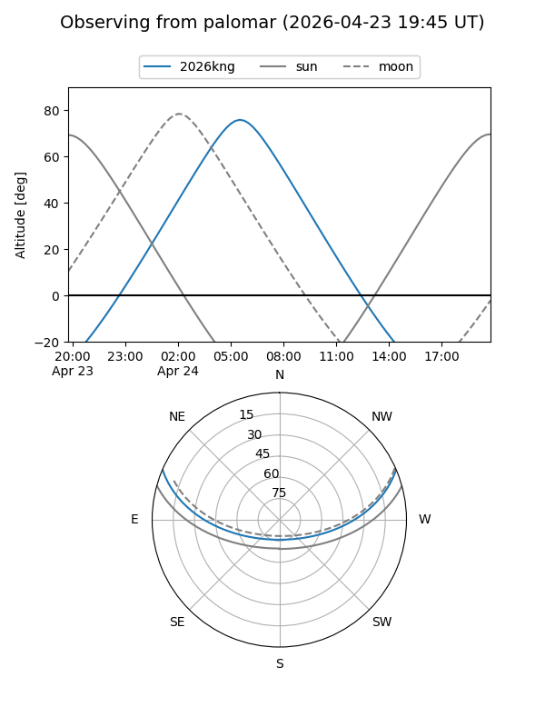
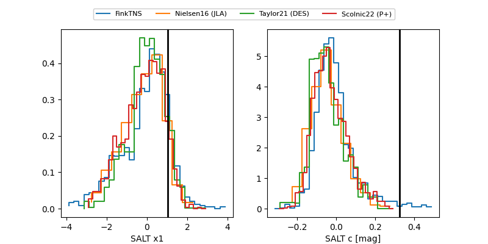

2026kng
Target 2026kng at 2026-04-23 23:04
Aliases and brokers:
FINK: link
Lasair: link
ALeRCE: link
TNS: link
YSE: link
alt names
ZTF26aarlpwa (ztf,fink_ztf)
2026kng (tns,yse)
Coordinates:
equatorial (ra, dec) = 178.0616,+19.41792
equatorial (HMS+DMS) = 11:52:14.78,+19:25:04.52
galactic (l, b) = (239.3942,+74.39085)
Flags:
Photometry:
last ztfg=20.55, ztfr=19.95
6 ztfg, 4 ztfr detections
Lightcurve

Visibility


Additional plots
